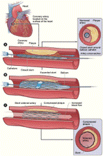

Mini currículo - Dr. Robervando Paixão
Formação profissional:
- Graduado pela Universidade Federal de São Paulo (Escola Paulista de Medicina);
- Residência em Clínica Médica pela Faculdade de Medicina da Universidade de São Paulo;
- Residência em Cardiologia pela Faculdade de Medicina da Universidade de São Paulo;
- Doutorado pela Faculdade de Medicina da Universidade de São Paulo;
- Concurso de Livre-docência pelo Departamento de Clínica Médica da Faculdade de Medicina da Universidade de São Paulo.
- Membro da Heart Rhythm Society (American Heart Association) e ECAS (European Cardiac Arrhythmia Society;
Atuação
- Professor Associado do Departamento de Clínica Médica da Faculdade de Medicina da Universidade de São Paulo;
- Coordenador Geral e Didático do Laboratório de Simulação da Faculdade Ciências Médicas de Minas Gerais;
- Membro da Comissão Diretora do Centro de Cardiologia do Hospital Sírio-Libanês;
- Coordenador do Programa de Residência Médica em Cardiologia do Hospital Sírio-Libanês;
- Membro da Comissão Científica do Centro de Cardiologia.
